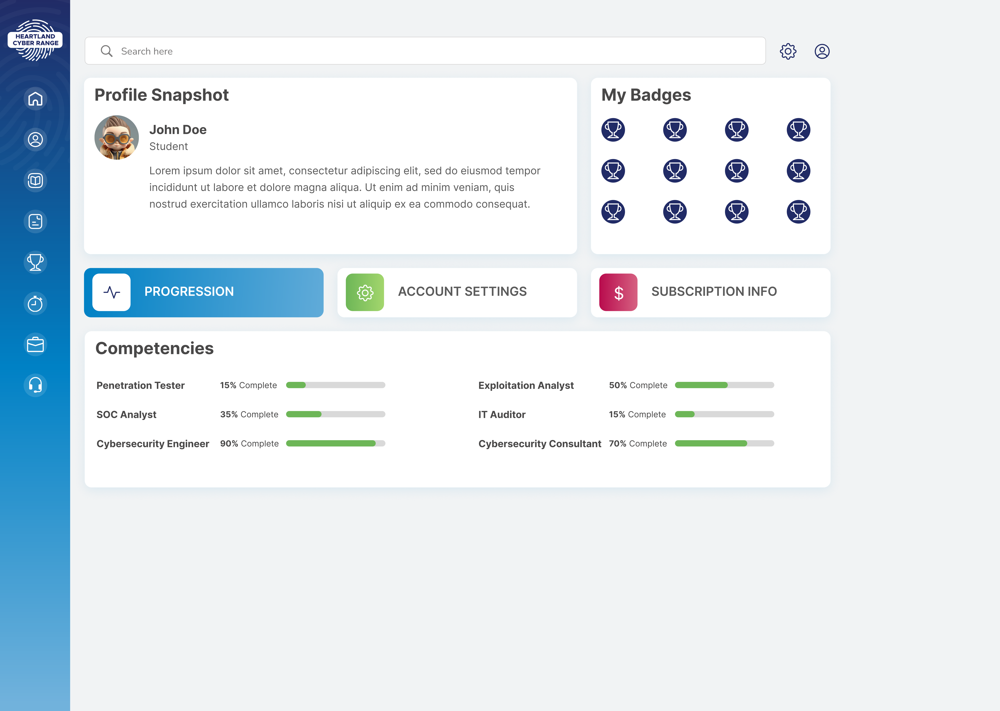
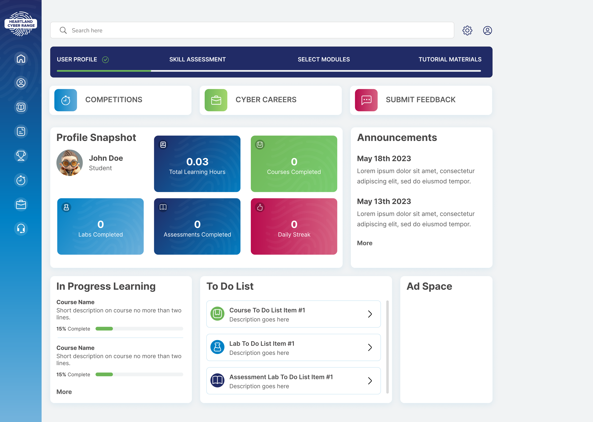
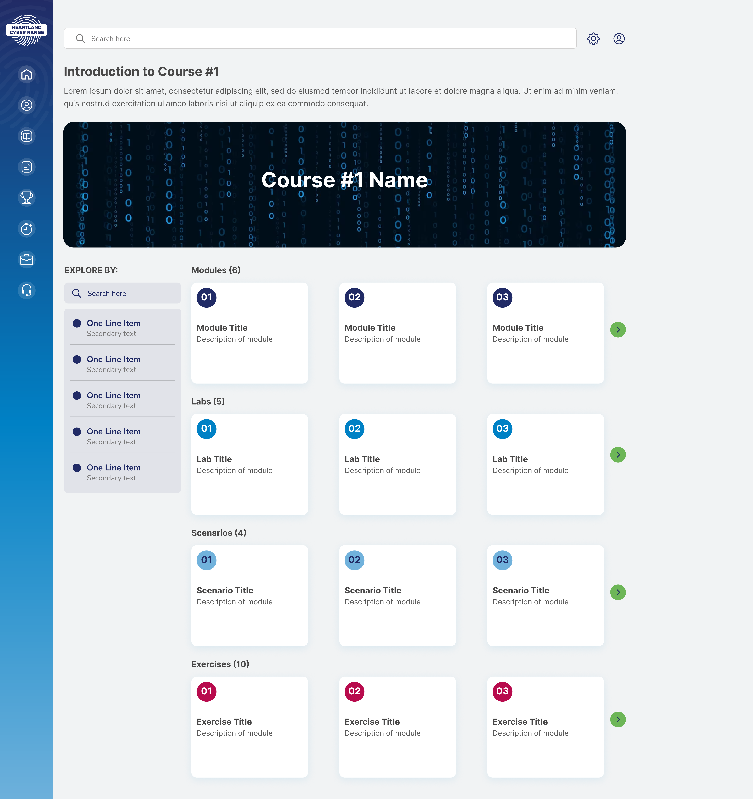

Navigating the Cyber Range Environment
User Interface Overview
Upon successfully logging in, you will notice a number of different sections in the user interface which are accessible from the navigation bar on the left-side of the screen. We’ll describe each of these below.
Navigation Links
 HCR Home
HCR Home
The HCR homepage where you can find announcements, news, and other updates related to the HCR.
 Dashboard
Dashboard
Your “home” screen is your user dashboard, which gives you quick at-a-glance information about your earned experience and quick links to other sections of the range.
 User Profile
User Profile
The User Profile section provides additional progress details, statistics, and announcements related to your user profile.
 Courses
Courses
The courses section allows you to view the various courses that are offered and search through them to find the content best suited to your needs.
 Scenarios
Scenarios
Practice your skills in real-world situations through scenario-based modules and delve into free form explore modules to practice and learn in your own way.
 Leaderboards
Leaderboards
Find out where you rank compared to other users in experience and learning or through competitive play.
 Compete
Compete
Compete in various challenges and team activities such as solo challenges, red & blue team exercises, and cooperative cyber-attack simulations.
 Careers
Careers
The EKC talent exchange portal, where you can showcase your HCR skills to potential employers and search for your next dream job!
 Support
Support
Find options to provide feedback and seek assistance for any issues you encounter while using the HCR.
User Interface Sections
Here we will explain each section within the user interface in detail.
Dashboard
Your “home” screen is your user dashboard, which gives you quick at-a-glance information about your earned experience and quick links to other sections of the range.

A snapshot of your profile, including your profile picture and description are displayed under the “Profile Snapshot” section. Next to it, any badges you have earned by achieving specific, related goals are displayed under the “My Badges” section.
The default view is “Progression”  and shows current progress in completing any particular learning pathway* displayed under the “Competencies” section.
and shows current progress in completing any particular learning pathway* displayed under the “Competencies” section.
Quick-access shortcuts for “Account Settings”  and “Subscription Info”
and “Subscription Info”  are also available, and show information relevant to each, by clicking on the appropriate button.
are also available, and show information relevant to each, by clicking on the appropriate button.
*Learning pathways are described on page [X], under the Learning Pathways section.
User Profile
The User Profile section provides additional progress details, statistics, and announcements related to your user profile. Across the top you will find quick-access buttons for competitions and careers (also available in the left-hand navigation bar), as well as an option for providing feedback for anything cyber range related.

The ‘Profile Snapshot’ section shows statistics related to your learning experience such as number of hours spent on the range, courses/labs/assessments completed, and your daily learning streak.
An ‘Announcements’ section displays any site-wide announcements for the HCR, as well as any course-specific or other announcements related to your user profile. ‘In Progress Learning’ will show a summary of courses you are enrolled in and the current progress in each.
The ‘To Do List’ will document any next steps to take in the completion of any courses or modules you are enrolled in.
Courses
The courses section allows you to view the various courses that are offered. Courses are searchable using the search bar near the top of the page. You may also filter courses by difficulty level, domain, and job role. Courses are intended to provide a complete learning experience regarding a particular subject or topic.

Courses are organized into categories. Categories include major cybersecurity topics such as malware, network security, and cryptography (among many others). Selecting a particular category shows you all of the courses related to that category. There may also be several additional sub-categories which when selected will narrow the scope of the courses shown. Select a course to view additional details related to it.

Displaying a particular course will also show all of the modules related to it. Modules are individual lessons or activities within a course. They may cover a range of topics, or often are focused on one particular area of interest or use of a particular tool or program.

Scenarios
Practice your skills in real-world situations through scenario-based modules and delve into free form explore modules to practice and learn in your own way.

Leaderboards
Check out the leaderboards section to see how you compare to other range users. Users can be ranked by achievements in badges earned, or progress in completing courses. The more you practice and gain experience, the higher you’ll climb!

Compete
Competitions are available to test the skills and abilities you’ve gained. Enter a solo competition to tackle challenges on your own, and have your results ranked amongst other competitors. Join a team to compete in cooperative scenarios, or in competitive showdowns. Choose from a variety of competitions such as capture-the-flags (CTFs), red vs. blue team exercises, and more.
 Some competitions may require enrollment by your educator or team administrator before they become accessible.
Some competitions may require enrollment by your educator or team administrator before they become accessible.
Careers
The Careers link is your portal to the EKC Talent Exchange. Show off your badges and experience earned on the range to potential employers. See exciting available cyber roles and learn what kind of experience the job poster requires. Use this info to strengthen your skillset and show companies you have the right stuff.

Support
You can submit feedback through the Support link, as well as find additional support resources such as the HCR FAQ and how to get assistance for any HCR related problems.

Virtual Machines and Networks
The HCR is a simulation environment – the computers and networks connecting them that you will interact with are all ‘virtualized’. That is to say that they are not physical devices; there are no network cables, network devices, monitors, or keyboards (other than your own). These virtual machines (VMs) and virtual networks can be created on the fly, allowing for massive flexibility and endless options for creating simulations. The EKC network that powers the HCR provides unparalleled performance, allowing VMs to be spun up in a fraction of the time as other ranges.
Any module that requires a VM to complete will contain a button. When you click on it, any VMs associated with the module will be started. Within a few moments, you should see the resources become available. Each VM will have an icon associated with it [image placeholder] that when clicked on, will open a ‘console’ view to it in a new tab. Simply click anywhere within this console view to begin interacting with the VM as you would any other computer.
If you begin a lab and are unable to complete it in one setting, any work you have done up to that point will be saved for [update with saved state time] hours. Simply access the lab again, and the VM will be just as you left it. Should you not access the VM within the timeout period, the VM resources will be reclaimed to provide to other users and your work will be lost. Relaunching the lab after this period will start up clean new VMs in their initial state.
When you have finished work in a lab, the VMs and any virtual network resources in use will be reclaimed when you click the [insert ‘complete lab’ button] button. VMs that were in use are ‘destroyed’, meaning any work or information within the VM will be lost, while the resources (RAM, compute, storage) the VM was using will be returned to the EKC network pool.